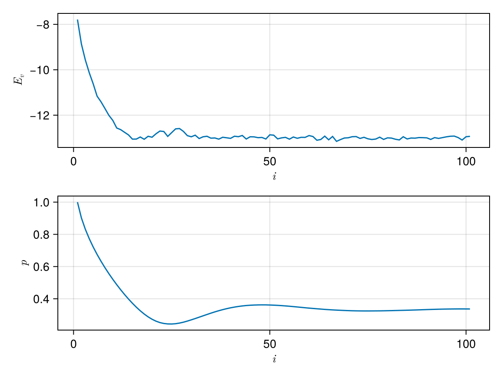
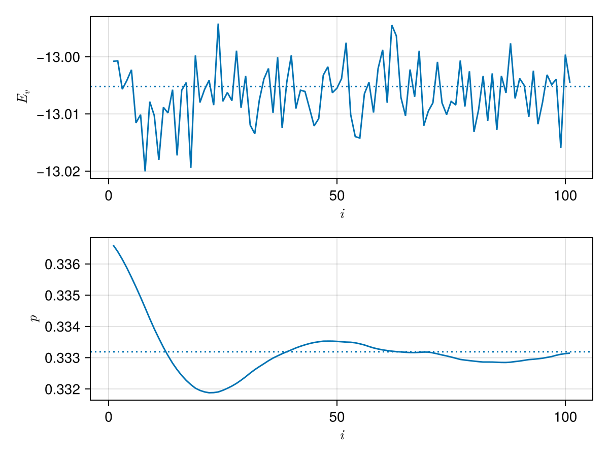

Gutzwiller


importance sampling and variational Monte Carlo for Rimu.jl
Installation
Gutzwiller.jl is not yet registered. To install it, run
import Pkg; Pkg.add("https://github.com/mtsch/Gutzwiller.jl")Usage guide
using Rimuusing Gutzwillerusing CairoMakieusing LaTeXStringsFirst, we set up a starting address and a Hamiltonian
addr = near_uniform(BoseFS{10,10})H = HubbardReal1D(addr; u=2.0)HubbardReal1D(fs"|1 1 1 1 1 1 1 1 1 1⟩"; u=2.0, t=1.0)In this example, we'll set up a Gutzwiller ansatz to importance-sample the Hamiltonian.
ansatz = GutzwillerAnsatz(H)GutzwillerAnsatz{Rimu.BitStringAddresses.BoseFS{10, 10, Rimu.BitStringAddresses.BitString{19, 1, UInt32}}, Float64, Rimu.Hamiltonians.HubbardReal1D{Float64, Rimu.BitStringAddresses.BoseFS{10, 10, Rimu.BitStringAddresses.BitString{19, 1, UInt32}}, 2.0, 1.0}}(HubbardReal1D(fs"|1 1 1 1 1 1 1 1 1 1⟩"; u=2.0, t=1.0))An ansatz is a struct that given a set of parameters and an address, produces the value it would have if it was a vector.
ansatz(addr, [1.0])1.0In addition, the function val_and_grad can be used to compute both the value and its gradient with respect to the parameters.
val_and_grad(ansatz, addr, [1.0])(1.0, [-0.0])Deterministic optimization
For effective importance sampling, we want the ansatz to be as good of an approximation to the ground state of the Hamiltonian as possible. As the value of the Rayleigh quotient of a given ansatz is always larger than the Hamiltonian's ground state energy, we can use an optimization algorithm to find the paramters that minimize its energy.
When the basis of the Hamiltonian is small enough to fit into memory, it's best to use the LocalEnergyEvaluator
le = LocalEnergyEvaluator(H, ansatz)LocalEnergyEvaluator(HubbardReal1D(fs"|1 1 1 1 1 1 1 1 1 1⟩"; u=2.0, t=1.0), GutzwillerAnsatz{Rimu.BitStringAddresses.BoseFS{10, 10, Rimu.BitStringAddresses.BitString{19, 1, UInt32}}, Float64, Rimu.Hamiltonians.HubbardReal1D{Float64, Rimu.BitStringAddresses.BoseFS{10, 10, Rimu.BitStringAddresses.BitString{19, 1, UInt32}}, 2.0, 1.0}}(HubbardReal1D(fs"|1 1 1 1 1 1 1 1 1 1⟩"; u=2.0, t=1.0)))which can be used to evaulate the value of the Rayleigh quotient (or its gradient) for given parameters. In the case of the Gutzwiller ansatz, there is only one parameter.
le([1.0])-7.825819465047338Like before, we can use val_and_grad to also evaluate its gradient.
val_and_grad(le, [1.0])(-7.825819465047338, [10.61414777614323])Now, let's plot the energy landscape for this particular case
begin fig = Figure() ax = Axis(fig[1, 1]; xlabel=L"p", ylabel=L"E") ps = range(0, 2; length=100) Es = [le([p]) for p in ps] lines!(ax, ps, Es) figend
To find the minimum, pass le to optimize from Optim.jl
using Optim, NLSolversBaseopt_nelder = optimize(le, [1.0]) * Status: success
* Candidate solution
Final objective value: -1.300521e+01
* Found with
Algorithm: Nelder-Mead
* Convergence measures
√(Σ(yᵢ-ȳ)²)/n ≤ 1.0e-08
* Work counters
Seconds run: 1 (vs limit Inf)
Iterations: 11
f(x) calls: 25
To take advantage of the gradients, wrap the evaluator in only_fg!. This will usually reduce the number of steps needed to reach the minimum.
opt_lbgfs = optimize(only_fg!(le), [1.0]) * Status: success
* Candidate solution
Final objective value: -1.300521e+01
* Found with
Algorithm: L-BFGS
* Convergence measures
|x - x'| = 1.01e-08 ≰ 0.0e+00
|x - x'|/|x'| = 3.04e-08 ≰ 0.0e+00
|f(x) - f(x')| = 1.46e-11 ≰ 0.0e+00
|f(x) - f(x')|/|f(x')| = 1.12e-12 ≰ 0.0e+00
|g(x)| = 1.96e-10 ≤ 1.0e-08
* Work counters
Seconds run: 2 (vs limit Inf)
Iterations: 8
f(x) calls: 14
∇f(x) calls: 14
∇f(x)ᵀv calls: 0
We can inspect the parameters and the value at the minimum as
opt_lbgfs.minimizer, opt_lbgfs.minimum([0.3331889106034745], -13.005208186389002)Variational quantum Monte Carlo
When the Hamiltonian is too large to store its full basis in memory, we can use variational QMC to sample addresses from the Hilbert space and evaluate their energy at the same time. An important paramter we have tune is the number steps. More steps will give us a better approximation of the energy, but take longer to evaluate. Not taking enough samples can also result in producing a biased result. Consider the following.
p0 = [1.0]@time kinetic_vqmc(H, ansatz, p0; steps=1e2)KineticVQMCResult
walkers: 1
samples: 100
local energy: -7.7485 ± 0.36303@time kinetic_vqmc(H, ansatz, p0; steps=1e5)KineticVQMCResult
walkers: 1
samples: 100000
local energy: -7.8462 ± 0.016432@time kinetic_vqmc(H, ansatz, p0; steps=1e7)KineticVQMCResult
walkers: 1
samples: 10000000
local energy: -7.8242 ± 0.0017126For this simple example, 1e2 steps gives an energy that is significantly higher, while 1e7 takes too long. 1e5 seems to work well enough. For more convenient evaluation, we wrap VQMC into a struct that behaves much like the LocalEnergyEvaluator.
qmc = KineticVQMC(H, ansatz; samples=1e4)KineticVQMC(
HubbardReal1D(fs"|1 1 1 1 1 1 1 1 1 1⟩"; u=2.0, t=1.0),
GutzwillerAnsatz{Rimu.BitStringAddresses.BoseFS{10, 10, Rimu.BitStringAddresses.BitString{19, 1, UInt32}}, Float64, Rimu.Hamiltonians.HubbardReal1D{Float64, Rimu.BitStringAddresses.BoseFS{10, 10, Rimu.BitStringAddresses.BitString{19, 1, UInt32}}, 2.0, 1.0}}(HubbardReal1D(fs"|1 1 1 1 1 1 1 1 1 1⟩"; u=2.0, t=1.0));
steps=10000,
walkers=1,
)qmc([1.0]), le([1.0])(-7.917725765967183, -7.825819465047338)Because the output of this procedure is noisy, optimizing it with Optim.jl will not work. However, we can use a stochastic gradient descent (in this case AMSGrad).
grad_result = amsgrad(qmc, [1.0])GradientDescentResult
iterations: 101
converged: false (iterations)
last value: -12.933086822129129 ± 0.05212526766013888
last params: [0.33660629902628203]While amsgrad attempts to determine if the optimization converged, it will generally not detect convergence due to the noise in the QMC evaluation. The best way to determine convergence is to plot the results. grad_result can be converted to a DataFrame.
grad_df = DataFrame(grad_result)101×11 DataFrame
Row │ α β1 β2 iter param value error gradient first_moment second_moment param_delta
│ Float64 Float64 Float64 Int64 SArray… Float64 Float64 SArray… SArray… SArray… SArray…
─────┼────────────────────────────────────────────────────────────────────────────────────────────────────────────────────────────────
1 │ 0.01 0.1 0.01 1 [1.0] -7.78562 0.0538182 [10.7647] [10.5342] [1.1588] [-0.0978586]
2 │ 0.01 0.1 0.01 2 [0.902141] -8.86373 0.0464083 [10.424] [10.5232] [2.23381] [-0.0704085]
3 │ 0.01 0.1 0.01 3 [0.831733] -9.56663 0.0496431 [9.8865] [10.4595] [3.1889] [-0.0585722]
4 │ 0.01 0.1 0.01 4 [0.773161] -10.1301 0.046663 [9.4001] [10.3536] [4.04063] [-0.051507]
5 │ 0.01 0.1 0.01 5 [0.721654] -10.6165 0.046196 [9.43591] [10.2618] [4.89059] [-0.0464028]
6 │ 0.01 0.1 0.01 6 [0.675251] -11.1637 0.0498729 [9.38158] [10.1738] [5.72182] [-0.042532]
7 │ 0.01 0.1 0.01 7 [0.632719] -11.4117 0.0467208 [8.31198] [9.98762] [6.3555] [-0.0396175]
8 │ 0.01 0.1 0.01 8 [0.593101] -11.7064 0.0463906 [7.5144] [9.7403] [6.8566] [-0.0371978]
9 │ 0.01 0.1 0.01 9 [0.555904] -12.007 0.0453048 [7.08776] [9.47504] [7.2904] [-0.0350918]
10 │ 0.01 0.1 0.01 10 [0.520812] -12.2303 0.0492187 [6.10027] [9.13757] [7.58963] [-0.0331681]
11 │ 0.01 0.1 0.01 11 [0.487644] -12.5653 0.0434871 [6.00369] [8.82418] [7.87418] [-0.0314465]
12 │ 0.01 0.1 0.01 12 [0.456197] -12.6371 0.0499097 [5.20315] [8.46207] [8.06616] [-0.029795]
13 │ 0.01 0.1 0.01 13 [0.426402] -12.7549 0.04129 [3.73822] [7.98969] [8.12524] [-0.0280293]
14 │ 0.01 0.1 0.01 14 [0.398373] -12.87 0.0471734 [2.95773] [7.48649] [8.13147] [-0.0262539]
15 │ 0.01 0.1 0.01 15 [0.372119] -13.0557 0.0471746 [2.27228] [6.96507] [8.13147] [-0.0244254]
16 │ 0.01 0.1 0.01 16 [0.347694] -13.0532 0.0496078 [1.03959] [6.37252] [8.13147] [-0.0223474]
17 │ 0.01 0.1 0.01 17 [0.325346] -12.9624 0.0473035 [-0.321139] [5.70316] [8.13147] [-0.02]
18 │ 0.01 0.1 0.01 18 [0.305346] -13.0616 0.0503141 [-1.09379] [5.02346] [8.13147] [-0.0176165]
19 │ 0.01 0.1 0.01 19 [0.28773] -12.9309 0.0600092 [-3.00523] [4.22059] [8.14047] [-0.0147927]
20 │ 0.01 0.1 0.01 20 [0.272937] -12.9715 0.0579868 [-3.78722] [3.41981] [8.2025] [-0.0119407]
21 │ 0.01 0.1 0.01 21 [0.260996] -12.8214 0.0736637 [-5.30763] [2.54707] [8.40218] [-0.00878708]
22 │ 0.01 0.1 0.01 22 [0.252209] -12.7 0.0673397 [-6.46594] [1.64577] [8.73624] [-0.00556809]
23 │ 0.01 0.1 0.01 23 [0.246641] -12.7195 0.0704876 [-6.32795] [0.848396] [9.04931] [-0.00282027]
24 │ 0.01 0.1 0.01 24 [0.243821] -12.9351 0.0579428 [-6.33539] [0.130017] [9.36019] [-0.000424971]
25 │ 0.01 0.1 0.01 25 [0.243396] -12.7684 0.0742958 [-6.72375] [-0.55536] [9.71867] [0.00178144]
26 │ 0.01 0.1 0.01 26 [0.245177] -12.604 0.0717911 [-7.47897] [-1.24772] [10.1808] [0.00391044]
27 │ 0.01 0.1 0.01 27 [0.249088] -12.5896 0.0734832 [-6.66502] [-1.78945] [10.5233] [0.00551626]
28 │ 0.01 0.1 0.01 28 [0.254604] -12.7159 0.0750905 [-6.76727] [-2.28723] [10.876] [0.00693548]
29 │ 0.01 0.1 0.01 29 [0.26154] -12.9022 0.0491477 [-4.70796] [-2.52931] [10.9889] [0.00763001]
30 │ 0.01 0.1 0.01 30 [0.26917] -12.9515 0.0553069 [-4.05566] [-2.68194] [11.0435] [0.00807043]
31 │ 0.01 0.1 0.01 31 [0.27724] -12.8817 0.0606533 [-3.83223] [-2.79697] [11.0799] [0.00840272]
32 │ 0.01 0.1 0.01 32 [0.285643] -13.03 0.0555996 [-2.92247] [-2.80952] [11.0799] [0.00844043]
33 │ 0.01 0.1 0.01 33 [0.294083] -12.9525 0.0533887 [-2.54025] [-2.78259] [11.0799] [0.00835953]
34 │ 0.01 0.1 0.01 34 [0.302443] -12.9295 0.0561216 [-2.49698] [-2.75403] [11.0799] [0.00827373]
35 │ 0.01 0.1 0.01 35 [0.310716] -13.0131 0.0495892 [-1.31356] [-2.60999] [11.0799] [0.00784098]
36 │ 0.01 0.1 0.01 36 [0.318557] -13.0041 0.0538061 [-0.70929] [-2.41992] [11.0799] [0.00726997]
37 │ 0.01 0.1 0.01 37 [0.325827] -13.0564 0.0522457 [-0.323889] [-2.21031] [11.0799] [0.00664027]
38 │ 0.01 0.1 0.01 38 [0.332468] -12.9734 0.0531575 [-0.0936469] [-1.99865] [11.0799] [0.00600438]
39 │ 0.01 0.1 0.01 39 [0.338472] -12.9959 0.0537422 [0.197928] [-1.77899] [11.0799] [0.00534448]
40 │ 0.01 0.1 0.01 40 [0.343817] -13.0218 0.0578737 [0.827595] [-1.51833] [11.0799] [0.0045614]
41 │ 0.01 0.1 0.01 41 [0.348378] -12.9274 0.054074 [0.672125] [-1.29929] [11.0799] [0.00390334]
42 │ 0.01 0.1 0.01 42 [0.352281] -12.9481 0.0492513 [1.04201] [-1.06516] [11.0799] [0.00319997]
43 │ 0.01 0.1 0.01 43 [0.355481] -12.8953 0.0504158 [1.14126] [-0.844515] [11.0799] [0.00253711]
44 │ 0.01 0.1 0.01 44 [0.358018] -13.0505 0.050834 [1.57012] [-0.603051] [11.0799] [0.0018117]
45 │ 0.01 0.1 0.01 45 [0.35983] -12.9521 0.0464987 [1.37355] [-0.405391] [11.0799] [0.00121788]
46 │ 0.01 0.1 0.01 46 [0.361048] -12.9561 0.0557322 [1.12124] [-0.252728] [11.0799] [0.00075925]
47 │ 0.01 0.1 0.01 47 [0.361807] -12.9914 0.0543225 [1.13926] [-0.113529] [11.0799] [0.000341066]
48 │ 0.01 0.1 0.01 48 [0.362148] -12.9821 0.0541768 [1.51911] [0.0497347] [11.0799] [-0.000149414]
49 │ 0.01 0.1 0.01 49 [0.361999] -13.05 0.0543178 [1.94005] [0.238766] [11.0799] [-0.000717306]
50 │ 0.01 0.1 0.01 50 [0.361282] -12.8656 0.0546533 [1.28281] [0.34317] [11.0799] [-0.00103096]
51 │ 0.01 0.1 0.01 51 [0.360251] -12.8815 0.0516809 [0.933968] [0.40225] [11.0799] [-0.00120845]
52 │ 0.01 0.1 0.01 52 [0.359042] -13.045 0.0495643 [1.71544] [0.533569] [11.0799] [-0.00160296]
53 │ 0.01 0.1 0.01 53 [0.357439] -12.9998 0.0458022 [1.31503] [0.611715] [11.0799] [-0.00183773]
54 │ 0.01 0.1 0.01 54 [0.355601] -12.9771 0.0553535 [1.16928] [0.667472] [11.0799] [-0.00200523]
55 │ 0.01 0.1 0.01 55 [0.353596] -13.0579 0.0400006 [1.44726] [0.74545] [11.0799] [-0.0022395]
56 │ 0.01 0.1 0.01 56 [0.351357] -12.9617 0.0508135 [0.976555] [0.768561] [11.0799] [-0.00230893]
57 │ 0.01 0.1 0.01 57 [0.349048] -13.018 0.0492497 [0.941607] [0.785866] [11.0799] [-0.00236092]
58 │ 0.01 0.1 0.01 58 [0.346687] -12.9761 0.0539207 [0.94583] [0.801862] [11.0799] [-0.00240897]
59 │ 0.01 0.1 0.01 59 [0.344278] -12.9786 0.0533627 [0.355961] [0.757272] [11.0799] [-0.00227501]
60 │ 0.01 0.1 0.01 60 [0.342003] -12.8987 0.0540787 [0.0271798] [0.684263] [11.0799] [-0.00205568]
61 │ 0.01 0.1 0.01 61 [0.339947] -12.941 0.0494044 [0.466655] [0.662502] [11.0799] [-0.0019903]
62 │ 0.01 0.1 0.01 62 [0.337957] -13.105 0.0449463 [0.725423] [0.668794] [11.0799] [-0.00200921]
63 │ 0.01 0.1 0.01 63 [0.335948] -13.071 0.0474075 [0.380422] [0.639957] [11.0799] [-0.00192257]
64 │ 0.01 0.1 0.01 64 [0.334025] -12.9241 0.0561656 [-0.3329] [0.542671] [11.0799] [-0.00163031]
65 │ 0.01 0.1 0.01 65 [0.332395] -13.085 0.0486279 [0.357555] [0.524159] [11.0799] [-0.00157469]
66 │ 0.01 0.1 0.01 66 [0.33082] -12.9378 0.0542466 [-0.615106] [0.410233] [11.0799] [-0.00123243]
67 │ 0.01 0.1 0.01 67 [0.329588] -13.1537 0.0479713 [0.0640659] [0.375616] [11.0799] [-0.00112844]
68 │ 0.01 0.1 0.01 68 [0.328459] -13.0765 0.047119 [0.28978] [0.367033] [11.0799] [-0.00110265]
69 │ 0.01 0.1 0.01 69 [0.327357] -13.006 0.0543795 [0.0225462] [0.332584] [11.0799] [-0.000999157]
70 │ 0.01 0.1 0.01 70 [0.326357] -12.9955 0.0570827 [-0.241665] [0.275159] [11.0799] [-0.000826639]
71 │ 0.01 0.1 0.01 71 [0.325531] -12.9489 0.0542308 [-0.771517] [0.170492] [11.0799] [-0.000512195]
72 │ 0.01 0.1 0.01 72 [0.325019] -12.9433 0.0585478 [-0.254187] [0.128024] [11.0799] [-0.000384612]
73 │ 0.01 0.1 0.01 73 [0.324634] -13.0244 0.0527448 [-0.432787] [0.0719426] [11.0799] [-0.000216132]
74 │ 0.01 0.1 0.01 74 [0.324418] -12.9749 0.0528776 [-0.577973] [0.00695097] [11.0799] [-2.08823e-5]
75 │ 0.01 0.1 0.01 75 [0.324397] -13.0418 0.0570616 [-0.627904] [-0.0565345] [11.0799] [0.000169842]
76 │ 0.01 0.1 0.01 76 [0.324567] -13.0722 0.0475823 [-0.132125] [-0.0640936] [11.0799] [0.000192551]
77 │ 0.01 0.1 0.01 77 [0.324759] -13.0523 0.040642 [-0.155999] [-0.0732841] [11.0799] [0.000220162]
78 │ 0.01 0.1 0.01 78 [0.32498] -12.9694 0.0511283 [-0.688937] [-0.134849] [11.0799] [0.000405118]
79 │ 0.01 0.1 0.01 79 [0.325385] -13.0684 0.0521708 [-0.415392] [-0.162904] [11.0799] [0.000489399]
80 │ 0.01 0.1 0.01 80 [0.325874] -12.9985 0.0574776 [-0.248428] [-0.171456] [11.0799] [0.000515092]
81 │ 0.01 0.1 0.01 81 [0.326389] -13.0096 0.0531188 [-0.621482] [-0.216459] [11.0799] [0.00065029]
82 │ 0.01 0.1 0.01 82 [0.327039] -13.0602 0.0473938 [-0.277445] [-0.222557] [11.0799] [0.000668612]
83 │ 0.01 0.1 0.01 83 [0.327708] -13.0913 0.0460557 [0.170263] [-0.183275] [11.0799] [0.0005506]
84 │ 0.01 0.1 0.01 84 [0.328259] -12.9499 0.0589947 [-0.587094] [-0.223657] [11.0799] [0.000671916]
85 │ 0.01 0.1 0.01 85 [0.328931] -13.0485 0.0433205 [-0.285872] [-0.229879] [11.0799] [0.000690607]
86 │ 0.01 0.1 0.01 86 [0.329621] -13.0071 0.0552292 [-0.477897] [-0.25468] [11.0799] [0.000765117]
87 │ 0.01 0.1 0.01 87 [0.330386] -13.0131 0.052209 [-0.281176] [-0.25733] [11.0799] [0.000773077]
88 │ 0.01 0.1 0.01 88 [0.331159] -12.9874 0.0543141 [-0.568724] [-0.288469] [11.0799] [0.000866627]
89 │ 0.01 0.1 0.01 89 [0.332026] -12.9909 0.055449 [-0.41717] [-0.30134] [11.0799] [0.000905291]
90 │ 0.01 0.1 0.01 90 [0.332931] -12.999 0.0542515 [0.176971] [-0.253509] [11.0799] [0.000761596]
91 │ 0.01 0.1 0.01 91 [0.333693] -13.0684 0.0482073 [-0.096139] [-0.237772] [11.0799] [0.000714319]
92 │ 0.01 0.1 0.01 92 [0.334407] -12.989 0.0488491 [-0.0937004] [-0.223364] [11.0799] [0.000671037]
93 │ 0.01 0.1 0.01 93 [0.335078] -13.0235 0.0497502 [0.214718] [-0.179556] [11.0799] [0.000539427]
94 │ 0.01 0.1 0.01 94 [0.335618] -12.9888 0.0568134 [0.0486183] [-0.156739] [11.0799] [0.000470878]
95 │ 0.01 0.1 0.01 95 [0.336089] -12.954 0.0530029 [0.292568] [-0.111808] [11.0799] [0.000335897]
96 │ 0.01 0.1 0.01 96 [0.336424] -12.9286 0.0452708 [0.131192] [-0.0875081] [11.0799] [0.000262894]
97 │ 0.01 0.1 0.01 97 [0.336687] -12.9223 0.0483667 [0.0142632] [-0.077331] [11.0799] [0.00023232]
98 │ 0.01 0.1 0.01 98 [0.33692] -12.9874 0.0561765 [0.676967] [-0.00190117] [11.0799] [5.71153e-6]
99 │ 0.01 0.1 0.01 99 [0.336925] -13.096 0.0531672 [0.584925] [0.0567814] [11.0799] [-0.000170584]
100 │ 0.01 0.1 0.01 100 [0.336755] -12.9499 0.0476436 [-0.0168327] [0.04942] [11.0799] [-0.000148469]
101 │ 0.01 0.1 0.01 101 [0.336606] -12.9331 0.0521253 [0.126501] [0.0571281] [11.0799] [-0.000171626]To plot it, we can either work with the DataFrame or access the fields directly
begin fig = Figure() ax1 = Axis(fig[1, 1]; xlabel=L"i", ylabel=L"E_v") ax2 = Axis(fig[2, 1]; xlabel=L"i", ylabel=L"p") lines!(ax1, grad_df.iter, grad_df.value) lines!(ax2, first.(grad_result.param)) figend
We see from the plot that the value of the energy is fluctiating around what appears to be the minimum. While the parameter estimate here is probably good enough for importance sampling, we can refine the result by creating a new KineticVQMC structure with increased samples and use it to refine the result. Here, we can pass the previous result grad_result in place of the initial parameters, which will continue the computation where the previous one left off. Alternatively, this can be achieved by passing the first_moment_init and second_moment_init arguments to amsgrad.
qmc2 = KineticVQMC(H, ansatz; samples=1e6)grad_result2 = amsgrad(qmc2, grad_result)GradientDescentResult
iterations: 101
converged: false (iterations)
last value: -13.004556677209903 ± 0.005533029067745565
last params: [0.3331457539415127]Now, let's plot the refined result next to the minimum found by Optim.jl
begin fig = Figure() ax1 = Axis(fig[1, 1]; xlabel=L"i", ylabel=L"E_v") ax2 = Axis(fig[2, 1]; xlabel=L"i", ylabel=L"p") lines!(ax1, grad_result2.value) hlines!(ax1, [opt_lbgfs.minimum]; linestyle=:dot) lines!(ax2, first.(grad_result2.param)) hlines!(ax2, opt_lbgfs.minimizer; linestyle=:dot) figend
Importance sampling
Finally, we have a good estimate for the parameter to use with importance sampling. Gutzwiller.jl provides AnsatzSampling, which is similar to GutzwillerSampling from Rimu, but can be used with different ansatze.
p = grad_result.param[end]G = AnsatzSampling(H, ansatz, p)AnsatzSampling{false, Float64, 1, GutzwillerAnsatz{Rimu.BitStringAddresses.BoseFS{10, 10, Rimu.BitStringAddresses.BitString{19, 1, UInt32}}, Float64, Rimu.Hamiltonians.HubbardReal1D{Float64, Rimu.BitStringAddresses.BoseFS{10, 10, Rimu.BitStringAddresses.BitString{19, 1, UInt32}}, 2.0, 1.0}}, Rimu.Hamiltonians.HubbardReal1D{Float64, Rimu.BitStringAddresses.BoseFS{10, 10, Rimu.BitStringAddresses.BitString{19, 1, UInt32}}, 2.0, 1.0}}(HubbardReal1D(fs"|1 1 1 1 1 1 1 1 1 1⟩"; u=2.0, t=1.0), GutzwillerAnsatz{Rimu.BitStringAddresses.BoseFS{10, 10, Rimu.BitStringAddresses.BitString{19, 1, UInt32}}, Float64, Rimu.Hamiltonians.HubbardReal1D{Float64, Rimu.BitStringAddresses.BoseFS{10, 10, Rimu.BitStringAddresses.BitString{19, 1, UInt32}}, 2.0, 1.0}}(HubbardReal1D(fs"|1 1 1 1 1 1 1 1 1 1⟩"; u=2.0, t=1.0)), [0.33660629902628203])This can now be used with FCIQMC. Let's compare the importance sampled time series to a non-importance sampled one.
prob_standard = ProjectorMonteCarloProblem(H; target_walkers=15, last_step=2000)sim_standard = solve(prob_standard)shift_estimator(sim_standard; skip=1000)BlockingResult{Float64}
mean = Inf ± 1.3
with uncertainty of ± 0.2662461208808023
from 13 blocks after 4 transformations (k = 5).
prob_sampled = ProjectorMonteCarloProblem(G; target_walkers=15, last_step=2000)sim_sampled = solve(prob_sampled)shift_estimator(sim_sampled; skip=1000)BlockingResult{Float64}
mean = -12.97 ± 0.55
with uncertainty of ± 0.07147215917600683
from 31 blocks after 5 transformations (k = 6).
Note that the lower energy estimate in the sampled case is probably due to a reduced population control bias. The effect importance sampling has on the statistic can be more dramatic for larger systems and beter choices of anstaze.
This page was generated using Literate.jl.